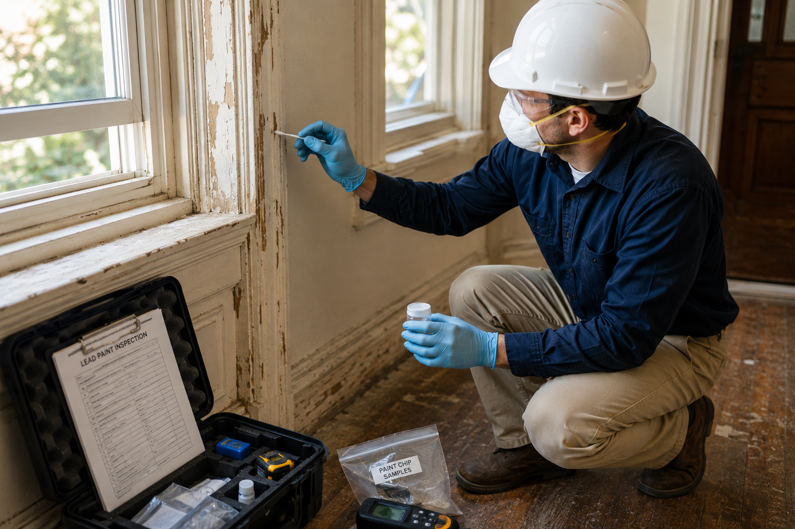
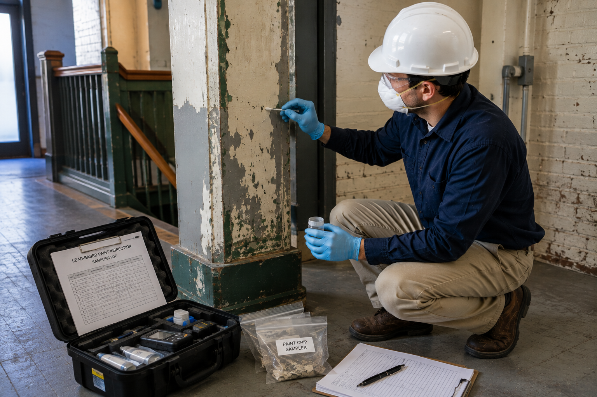

Professional Lead-Based Paint Inspection Services
California Building Environment provides independent lead-based paint inspections, environmental consulting, and professional sample collection for residential, commercial, industrial, educational, and government properties throughout Southern California.
Representative paint samples are collected when appropriate and submitted to accredited laboratories for analysis. We do not perform laboratory analysis or lead paint abatement services.
Independent Lead-Based Paint Evaluations
Lead-based paint may be present in older residential, commercial, institutional, and industrial buildings. Our inspections help identify painted surfaces that may require further evaluation before renovation, demolition, maintenance, or property transactions.
When laboratory confirmation is appropriate, representative paint samples are collected using accepted sampling procedures and submitted to accredited laboratories for analysis. Laboratory findings are incorporated into a detailed inspection report.
Because California Building Environment does not perform lead paint removal or remediation, our inspections remain independent and objective.

Common Reasons for Lead-Based Paint Inspections
Lead-based paint inspections are commonly performed before renovation, demolition, remodeling, property transactions, maintenance activities, and other projects involving painted building materials.
Renovation Projects
Before disturbing painted building materials, an inspection can help determine whether lead-based paint may be present.
Demolition Projects
Buildings scheduled for demolition often require environmental evaluations before work begins.
Older Homes
Homes constructed before the federal ban on residential lead-based paint may contain lead-based coatings on interior or exterior painted surfaces.
Commercial Buildings
Commercial and industrial facilities undergoing remodeling or maintenance may require lead-based paint evaluations.
Property Transactions
Property owners, buyers, investors, and managers may request inspections to better understand existing environmental conditions.
Facility Maintenance
Lead-based paint inspections can help support planning before maintenance or capital improvement projects.
Our Lead-Based Paint Inspection Process
Project Consultation
We discuss your project, building information, inspection objectives, and scheduling requirements.
Visual Inspection
Accessible painted building components are evaluated and representative sampling locations are identified when appropriate.
Sample Collection
Representative paint samples are collected using industry-accepted procedures and submitted to accredited laboratories.
Laboratory Report
Laboratory findings are incorporated into a detailed inspection report documenting observations and analytical results.

Common Painted Surfaces We Evaluate
Every property is different. During an inspection, painted surfaces may be evaluated based on the project scope and accessibility.
- Interior walls
- Ceilings
- Doors and door frames
- Window frames and sashes
- Baseboards and trim
- Exterior siding
- Fascia boards
- Eaves and soffits
- Railings
- Porches and patios
- Structural steel
- Industrial painted surfaces
- Commercial painted finishes
- Additional painted materials identified during the inspection
Lead-Based Paint Inspection FAQs
Do you perform laboratory lead testing?
No. We collect representative paint samples during the inspection when appropriate. Those samples are submitted to accredited laboratories for analysis. Laboratory analysis is performed by the accredited laboratory.
Do you remove lead-based paint?
No. California Building Environment provides independent inspections and consulting only. We do not perform lead paint abatement or remediation services.
Will every inspection require paint samples?
Not necessarily. The inspection scope depends on the project, the building, and the client's objectives. Representative samples are collected only when appropriate.
How long does a lead-based paint inspection take?
Inspection times vary depending on the size of the property, accessibility, and the number of painted surfaces requiring evaluation.
When will I receive the laboratory results?
Turnaround time depends on the accredited laboratory and the selected analysis schedule. Results are included with your final inspection report.
Regulatory Framework
Lead-based paint inspections in California are governed by federal and state regulations designed to protect occupants from lead exposure:
- EPA RRP Rule — The Renovation, Repair, and Painting Rule requires lead-safe work practices and inspections for pre-1978 buildings.
- CDPH Lead Compliance Program — California Department of Public Health administers the lead-safe housing and lead compliance programs.
- Cal/OSHA Lead Standards — California Occupational Safety and Health Administration's lead-in-construction standard (Title 8, Section 1532.1) requires exposure assessments.
- HUD Lead Safe Housing Rule — Federal lead safety requirements for federally assisted housing.
Our inspectors are California CDPH-certified lead inspectors and risk assessors. All dust wipe samples are analyzed by NVLAP-accredited laboratories.
Request a Quote
Schedule a Lead-Based Paint Inspection
California Building Environment provides independent lead-based paint inspections, professional sample collection, and environmental consulting throughout Southern California.